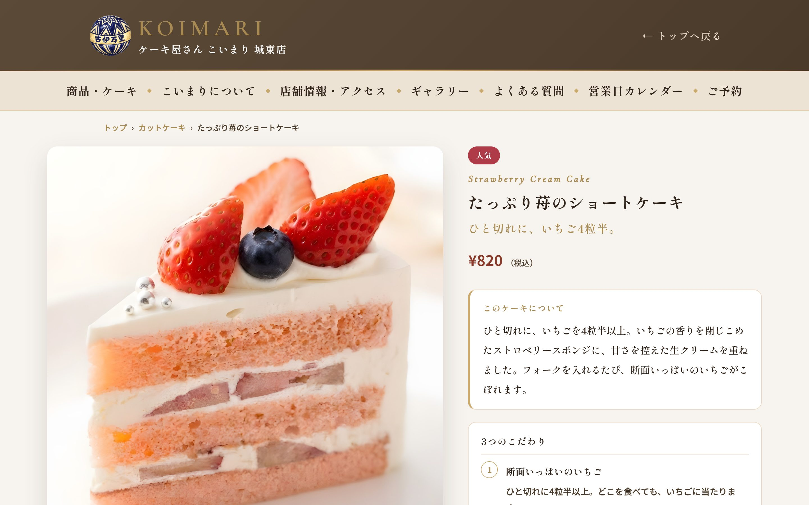
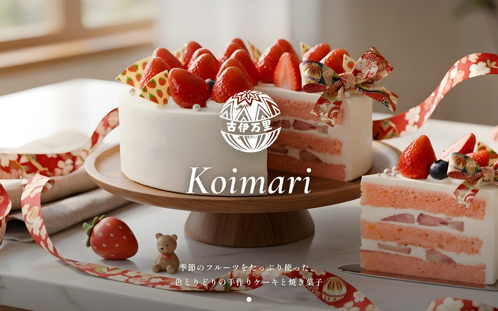
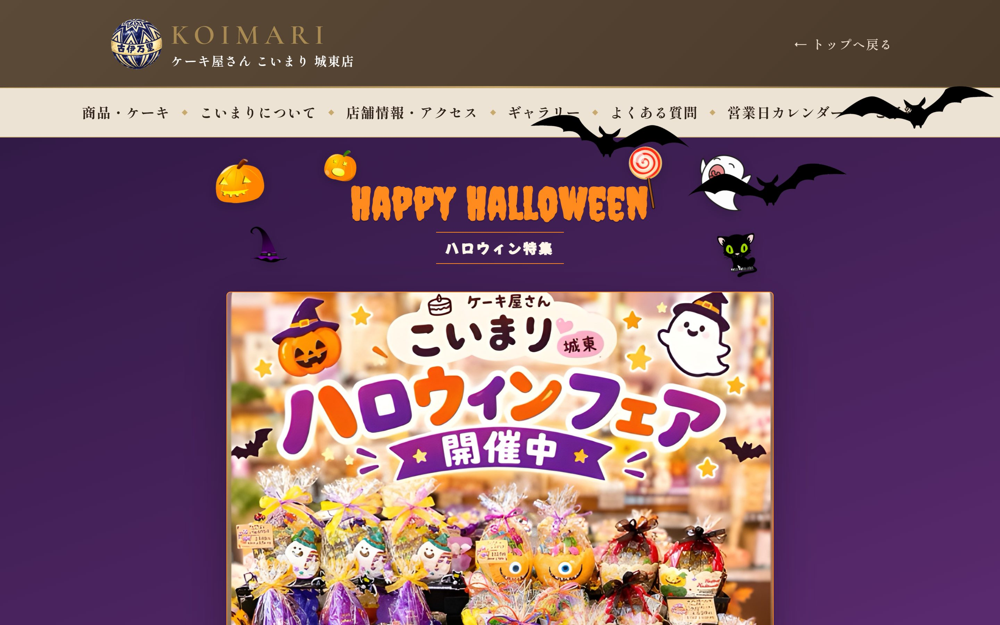
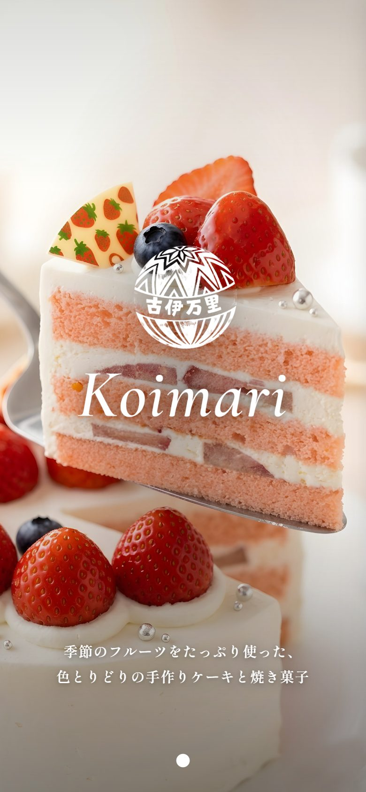
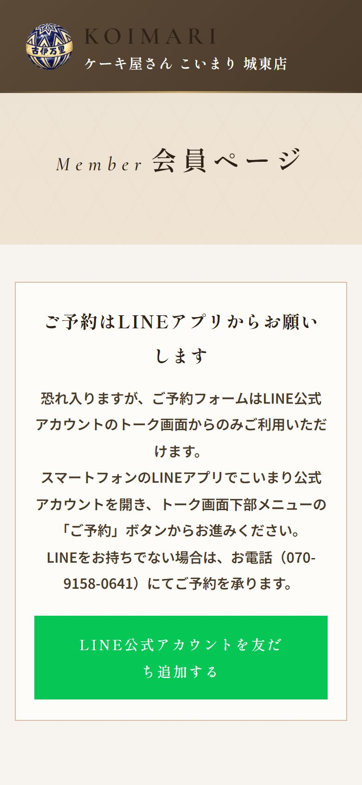
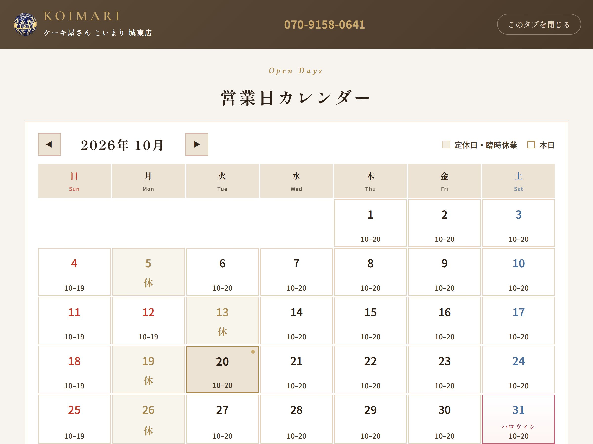

01Market Research / Product
お客様のニーズ探求と、商品力の強化
まずは、お客様のニーズを探るところから始めました。日本中のお菓子を食べ歩いて、いまの市場のニーズを研究し、こいまりの商品に落とし込んでいます。商品力を高め、見せ方も一新しました。
今後も、ご愛好いただいているお客様にご納得いただける商品展開を続けてまいります。そして、街のケーキ屋さんという枠にとどまらず、ケーキやお菓子の魅力をどんどん広げていきます。
Cake Shop Koimari
30年以上洋菓子の世界に携わってこられたオーナー様が、15年前に大阪市城東区で開かれた「ケーキ屋さん こいまり 城東店」。そのオーナー様の想いに共感し、NORI&TATEが経営面のサポートに入らせていただくことになりました。
オーナー様も従業員のみなさんも、これまで通りお店に立ち続けています。私たちはその後ろ盾として、もっと地域に愛されるこいまりを一緒につくっていきます。
ご愛好いただいているお客様、支えてくださっている地域の皆様。これまでの大切なものはそのままに、これからの新しい価値も少しずつ積み上げていけたらと考えています。
事業承継した「ケーキ屋さん こいまり 城東店」での取り組みの一部です。業種が変わっても、お客様のニーズを探り、課題を見つけ、仕組みで解決するという考え方は同じです。

まずは、お客様のニーズを探るところから始めました。日本中のお菓子を食べ歩いて、いまの市場のニーズを研究し、こいまりの商品に落とし込んでいます。商品力を高め、見せ方も一新しました。
今後も、ご愛好いただいているお客様にご納得いただける商品展開を続けてまいります。そして、街のケーキ屋さんという枠にとどまらず、ケーキやお菓子の魅力をどんどん広げていきます。

もともと公式ホームページがなかったこいまりに、一から作ってリリースしました。「フルーツリッチで満足度の高いケーキ屋さん」という強みが伝わるよう、写真の見せ方・言葉選び・ページ構成を組み立てています。お店の方が写真や文章をその場で更新できる管理画面も整えました。

ハロウィンやクリスマスなど、イベントごとに配色・飾り・動きが切り替わる特設ページの仕組みをつくりました。お知らせを書くだけで、関連商品が並んだにぎやかなページになり、トップページにも自動で掲載されます。


写真から選んだケーキの仕様がそのまま入る予約フォーム、見積もりの自動計算、受付・確定・前日のリマインドの自動送信まで、LINEの中で完結する流れにしました。スタッフの電話対応や確認の手間を減らしています。

定休日・祝日・特別営業時間が自動で反映される営業日カレンダーをはじめ、シフトの作成・修正、勤怠と給与の計算、経費精算など、日々の業務を一つずつ仕組みに置き換えてきました。
こいまりの公式サイトを見る